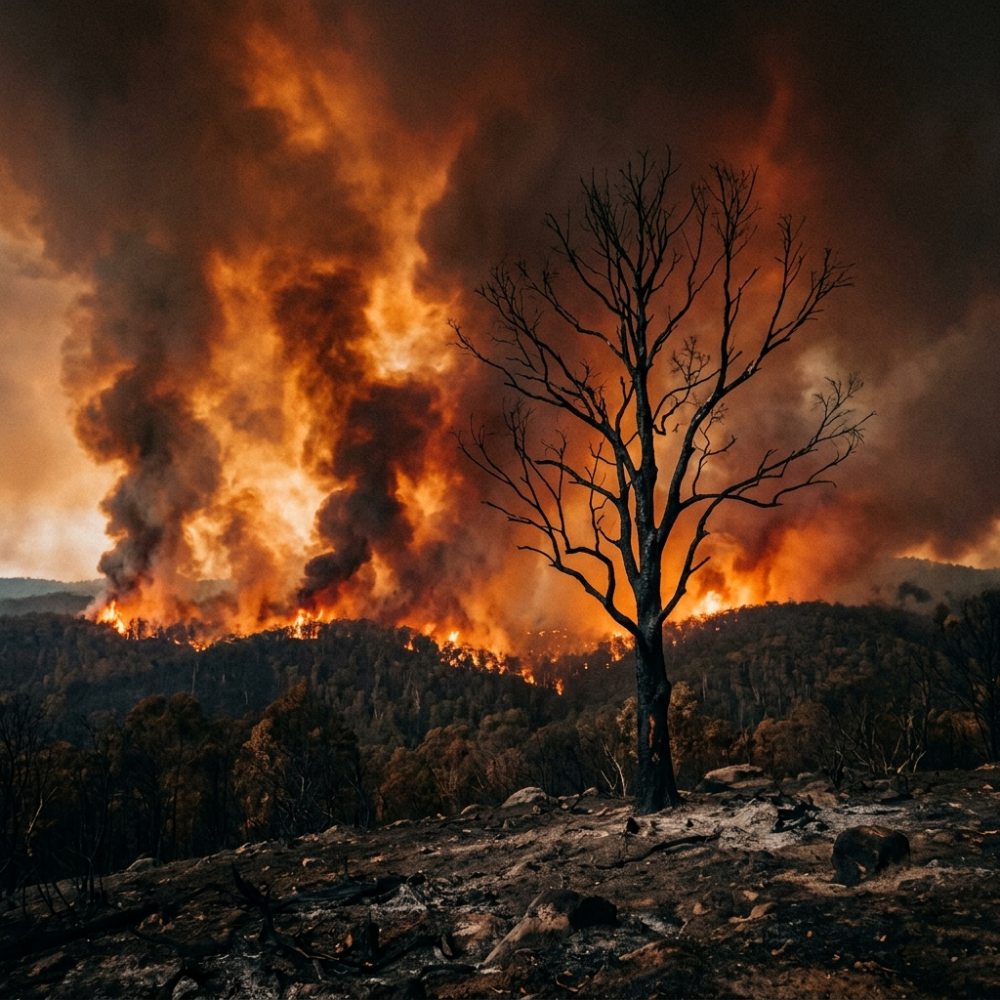
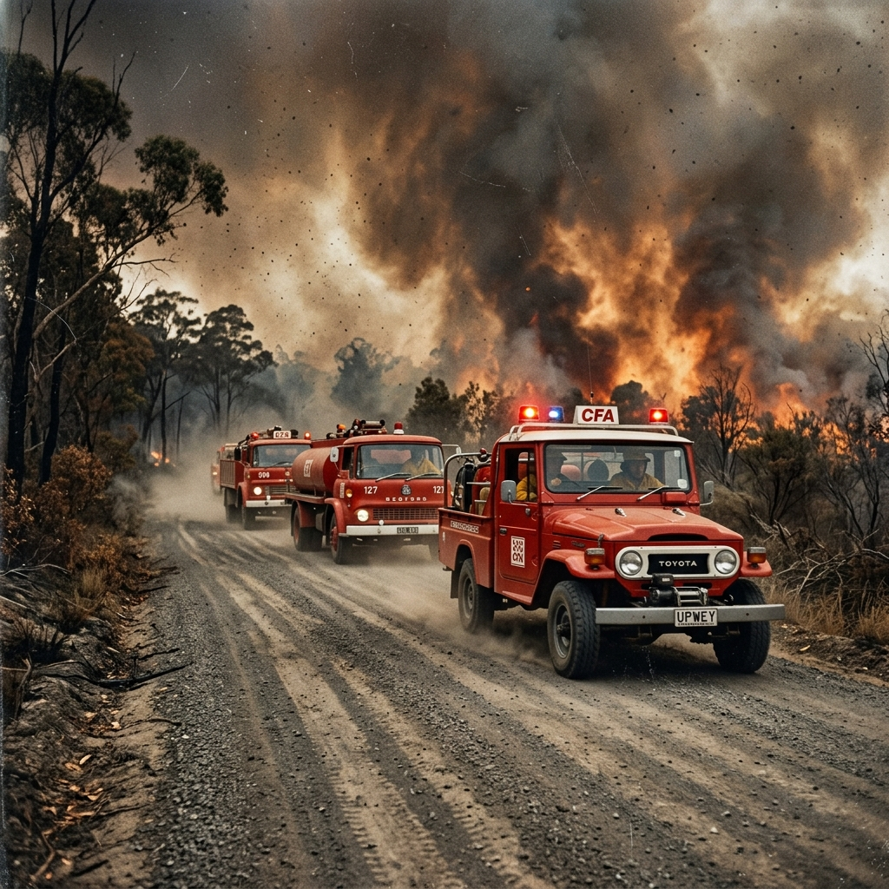
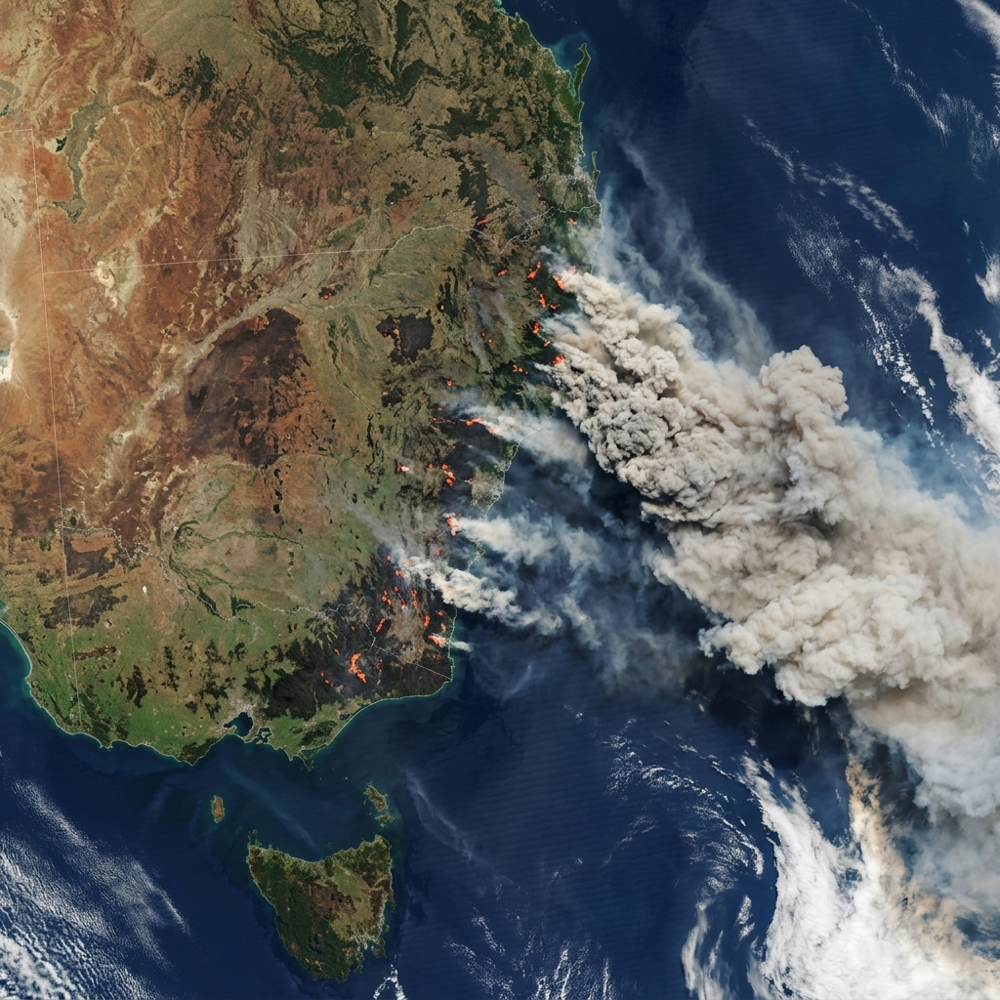

A record of resilience and recovery. Explore the major fires that have shaped the Australian landscape, and the science behind our defense.
3
Mega Events
20m+
Hectares Burnt
Larger than the entire country of Great Britain
200k+
Volunteers
FFDI 100+
Catastrophic Risk
A National Identity
Australia is one of the most fire-prone continents on Earth. For millions of years, fire has been an essential ecological process, shaping the landscape and driving the evolution of iconic species like the Eucalyptus, which often depend on fire to release their seeds.
However, the intersection of ancient biology, a warming climate, and expanding human settlements has transformed fire from a natural cycle into a significant national challenge. Understanding bushfires is not just about environmental science; it's about understanding the resilience of the Australian spirit and the complex history of a nation built on the frontier of extreme weather.
Historical Fires
Three defining periods in Australian history where fire reshaped our nation's safety protocols and community bonds.

Tragedy in Victoria led to the most significant changes in fire danger ratings and building codes in Australia.
Explore Records arrow_forward
A deadly shift in weather conditions across SA and VIC proved just how fast a fire-front can change direction.
Explore Records arrow_forward
The "Mega-Fires" that captured global attention, highlighting the impact of climate on our fire seasons.
Explore Records arrow_forwardPrevention & Prep
Education is the first line of defense. Understanding fuel loads, hazard reduction, and the new Australian Fire Danger Rating system.
Learn Preparation safety_checkThe Frontline
How our emergency services respond. From ground crews building containment lines to Large Air Tankers dropping retardant from above.
Explore Defense local_fire_departmentAbout This Archive
The Bushfire Archive is an educational resource dedicated to preserving the history of Australia's most significant fire events. By integrating primary source material, meteorological records, and survivor narratives, we aim to provide a comprehensive look at how these events shape our nation.
This digital initiative focuses on the dual stories of tragic loss and remarkable resilience, exploring the scientific evolution of fire defense and the cultural significance of the "volunteer spirit" in regional Australia.
Primary Sources
Curated newspaper archives, archival photography, and official royal commission reports from significant fire seasons.
Meteorological Logs
Detailed analysis of weather conditions, FFDI (Forest Fire Danger Index) data, and heat-map visualizations for each event.
Survivor Logs
Personal accounts from first responders and community members, highlighting themes of endurance and communal recovery.